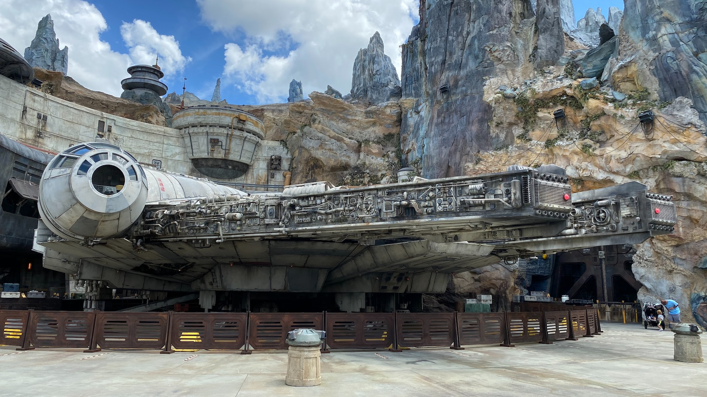

Star Wars: A New Hope
Star Wars: A New Hope released in 1977, becoming a blockbuster film. The film took inspiration from the Flash Gordon serials and Dune. It also went through various rewrites and remasters to reach its' current state. The visuals and sound design were groundbreaking for the time. A New Hope was designed around being a standalone film. The film is an escapade from reality which can be seen with the very little time given towards emotional scenes: the death of Luke's parents, beyond the initial moment, doesn't get any real emotional moments. The same can be said with almost every death in the movie: there is no mention of the emotions they must be feeling beyond the single moment they get.
The comedic relief character C-3PO is fairly decent, especially if compared to Jar Jar Binks in the prequels. The movie is a classic zero-to-hero story. One of the things this movie did that made unique is the rough, beat-up technologies; this provided a more realistic enviroment rather than make everything hyper-modern and advanced like Star Trek. Luke Skywalker offers us a character to symbolize with: a young farm boy who dreams of better and more important things. He dreams of exploring the stars and becoming something more than a farmer. The film's production cost was 40 to 45 million US dollars in today's inflated currency. The editors did an amazing job moving around the scenes to make them fit well with each other. This film started off the whole Star Wars franchise: let's see how the next film expands on the world and story.